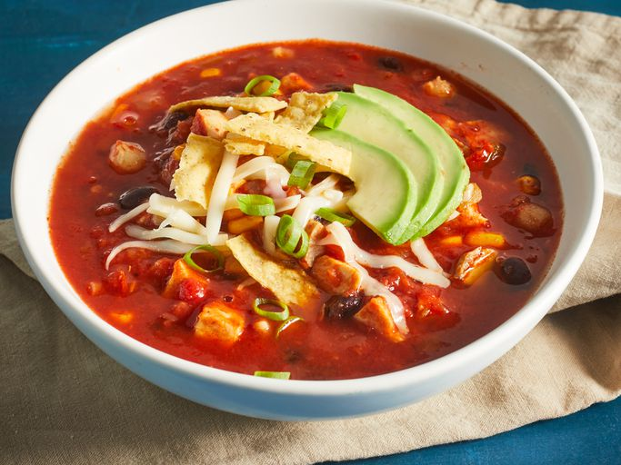

Chicken Tortilla Soup

Hearty Soup to Make all your Troubles go Away
If you're a beginner trying to work your way around the kitchen, you can never go wrong
with recreating a chicken soup recipe. Not this isn't just your ordinary chicken soup that
can be cooked and served within 30 minutes. Though the prep time is about 30 minutes, the chicken broth will be made from scratch!
If you're not up for the challenge yet, I recommend trying this recipe
here.

The soup is a little on the spicy side, topped with garnishes such as:
- tortilla chips
- sour cream
- cliantro(if the soapy taste doesn't bother you)
- crumbled Mexican cheese
Get your creative juices running here!
Ingredients
- 1(4.5 pound) whole chicken
- 3 white onions, halved, divided
- 1 bunch cliantro, rinsed well
- 2 bay leaves
- 1/2 teaspoon whole black peppercorns
- 1 teaspoon Mexican oregano
- 2 dried chili pepper pods(optional)
- 3 quarts water
Tortilla Strips
- 12 corn tortillas
- 1/4 cup vegetable oil
- 1/2 teaspoon kosher salt
Charred Vegetable Salsa
- 3 large tomatoes
- 1 sweet red pepper, halved & seeded
- 1 large or 2 small jalapeno peppers, halved & seeded
- 6 garlic cloves, peeled
- 1 whole canned chipotel pepper in adobo sauce (optional)
For Serving Optional
- sour cream
- sliced avocado
- shredded or crumbled Mexican cheese
- cliantro
Instructions
- Combine chicken, 1 onion, stems from the cilantro bunch, bay leaves, oregano, peppercorns, dried chili pods, and 3 quarts of water in a large soup pot set over medium-high heat. Bring to simmer, lower heat to medium-low, and simmer for 1 hour.
- Bake tortilla strips in a preheated oven at 350F until golden brown and crispy, about 30 minutes.
- Shred chicken, simmer bones in broth on low heat for 4 hours.
- Char onions, tomatoes, sweet red pepper, and jalapeno under the broiler for 7-10 minutes. Blend with garlic, chipotle, and water for salsa.
- Add salsa to broth, simmer for 2 hours. Strain and season with salt. Add cumin, lime, and shredded chicken. Simmer for 15-30 minutes.
- Garnish soup with tortilla strips, sour cream, avocado, cilantro, cheese, lime, and cayenne if desired.